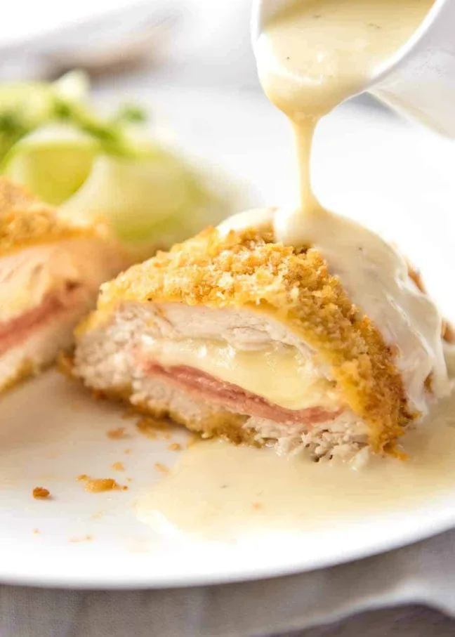

Chicken Cordon Bleu
Home

Description
An easy chicken cordon bleu recipe, baked rather than fried. Restaurant-style, from the comfort of your own kitchen.
Ingredients
- Breadcrumbs:
- Panko breadcrumbs- 1/2 cup
- Oil spray
- 3 tbsp mayonnaise
- 1 1/2 tbsp Dijon mustard
- 1/8 tsp salt and pepper
- Chicken:
- 2 small chicken breasts (6-7 oz/180-210 g each)
- 1/4 tsp each salt and pepper
- 4 slices swiss cheese
- 4 to 6 slices ham (2.5 oz/75 g)
- Dijon Cream Sauce:
- 1 1/2 tbsp unsalted butter
- 1 1/2 tbsp flour
- 2 tbsp Dijon mustard
- 3 tbsp parmesan cheese, finely grated
- 1/8 tsp each salt and pepper
Steps
- Preheat oven to 200°C/390°F
- Spread panko breadcrubs on a baking tray and spray with oil. Bake for 3 minutes or until light golden. Remove and scrape into bowl straight away.
- Cut a pocket into each chicken breast. Fold the cheese in half and place 2 pieces inside each pocket. Do the same with the ham. Close the pocket, seal with 2 toothpicks. Sprinkle with salt and pepper.
- Mix the mayonnaise, mustard, salt and pepper in a bowl. Spread onto the top and sides of the chicken (not underside).
- Sprinkle panko over the chicken, using your other hand to press the breadcrumbs onto the side of the chicken. Spray with oil.
- Bake for 25 to 30 minutes, or until golden brown and just cooked through. Remove toothpicks, serve with the Dijon cream sauce.
Dijon Cream Sauce
- Melt butter over medium heat in a small saucepan. Add flour and cook for 1 minute.
- Add half the milk and whisk until the flour mixture is blended in. Add remaining milk, mustard and cheese. Cook for 3 minutes, whisking constantly, until thickened. It will thicken as it cools.
- Remove from heat, add salt and pepper to taste. Serve with chicken.